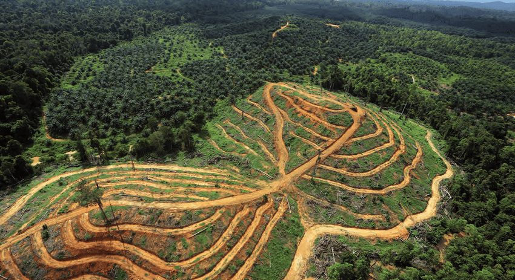
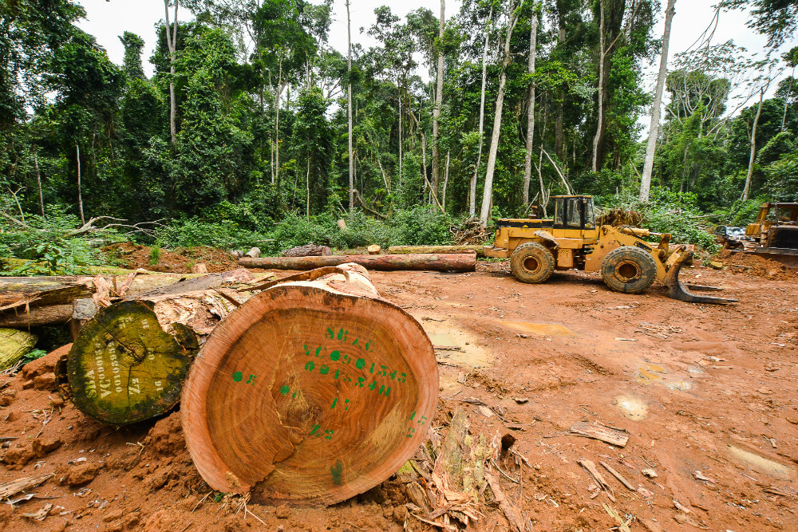

In fiecare minut 26 de hectare de padure sunt pierdute – si nu e greu de vazut ca daca continuam vom avea o planeta lipsita de padure. Acest lucru ar fi catastrofic nu numai din pricina faptului ca multe specii de animale isi au habitatul in padure ci si deoarece padurile joaca un rol important in reglarea climei planetei. In fiecare minut 26 de hectare de padure sunt pierdute – si nu e greu de vazut ca daca continuam vom avea o planeta lipsita de padure. Acest lucru ar fi catastrofic nu numai din pricina faptului ca multe specii de animale isi au habitatul in padure ci si deoarece padurile joaca un rol important in reglarea climei planetei.
Oamenii au trait in preajma padurilor ecuatoriale de mii de ani, luand ce era necesar de la natura fara sa intervina in echilibrul natural. Insa, in ultimele doua secole populatia s-a inmultit fiind din ce in ce mai multa nevoie pentru spatiu de construit si agricultura. Impreuna cu comertul de lemn care s-a intensificat in ultimii ani, au adus o degradare fara precent asupra padurii.Astăzi, cea mai mare cantitate de defrișare are loc în pădurile tropicale, în contextul construcției extinse a drumurilor în regiuni care odată erau aproape inaccesibile. Construirea sau modernizarea drumurilor în păduri le face mai accesibile pentru exploatare.
 